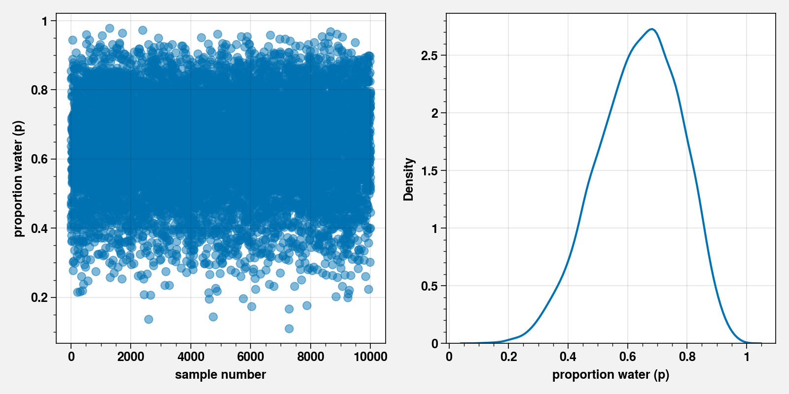
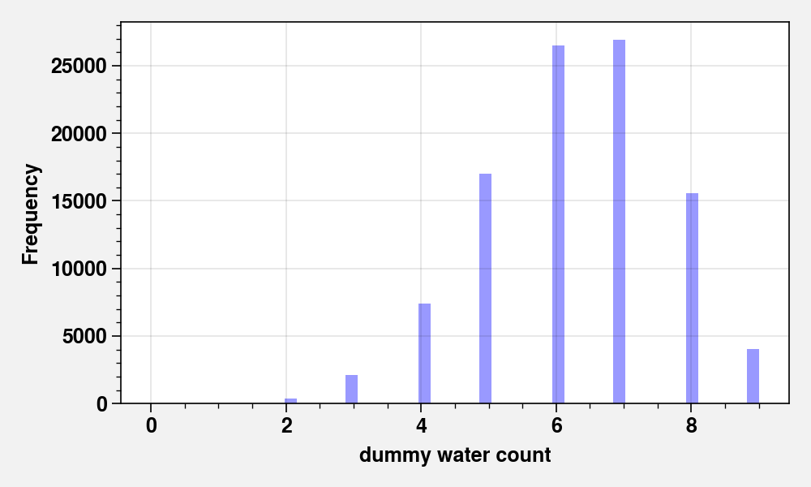

Chapter 03 - Sampling the Imaginary¶
!pip install torch torchvision pyro-ppl proplot black blackcellmagic
Requirement already satisfied: torch in /opt/hostedtoolcache/Python/3.7.7/x64/lib/python3.7/site-packages (1.5.1)
Requirement already satisfied: torchvision in /opt/hostedtoolcache/Python/3.7.7/x64/lib/python3.7/site-packages (0.6.1)
Requirement already satisfied: pyro-ppl in /opt/hostedtoolcache/Python/3.7.7/x64/lib/python3.7/site-packages (1.3.1)
Requirement already satisfied: proplot in /opt/hostedtoolcache/Python/3.7.7/x64/lib/python3.7/site-packages (0.6.4)
Requirement already satisfied: black in /opt/hostedtoolcache/Python/3.7.7/x64/lib/python3.7/site-packages (19.10b0)
Requirement already satisfied: blackcellmagic in /opt/hostedtoolcache/Python/3.7.7/x64/lib/python3.7/site-packages (0.0.2)
Requirement already satisfied: future in /opt/hostedtoolcache/Python/3.7.7/x64/lib/python3.7/site-packages (from torch) (0.18.2)
Requirement already satisfied: numpy in /opt/hostedtoolcache/Python/3.7.7/x64/lib/python3.7/site-packages (from torch) (1.19.0)
Requirement already satisfied: pillow>=4.1.1 in /opt/hostedtoolcache/Python/3.7.7/x64/lib/python3.7/site-packages (from torchvision) (7.2.0)
Requirement already satisfied: tqdm>=4.36 in /opt/hostedtoolcache/Python/3.7.7/x64/lib/python3.7/site-packages (from pyro-ppl) (4.47.0)
Requirement already satisfied: pyro-api>=0.1.1 in /opt/hostedtoolcache/Python/3.7.7/x64/lib/python3.7/site-packages (from pyro-ppl) (0.1.2)
Requirement already satisfied: opt-einsum>=2.3.2 in /opt/hostedtoolcache/Python/3.7.7/x64/lib/python3.7/site-packages (from pyro-ppl) (3.2.1)
Requirement already satisfied: matplotlib in /opt/hostedtoolcache/Python/3.7.7/x64/lib/python3.7/site-packages (from proplot) (3.2.2)
Requirement already satisfied: regex in /opt/hostedtoolcache/Python/3.7.7/x64/lib/python3.7/site-packages (from black) (2020.6.8)
Requirement already satisfied: pathspec<1,>=0.6 in /opt/hostedtoolcache/Python/3.7.7/x64/lib/python3.7/site-packages (from black) (0.8.0)
Requirement already satisfied: appdirs in /opt/hostedtoolcache/Python/3.7.7/x64/lib/python3.7/site-packages (from black) (1.4.4)
Requirement already satisfied: typed-ast>=1.4.0 in /opt/hostedtoolcache/Python/3.7.7/x64/lib/python3.7/site-packages (from black) (1.4.1)
Requirement already satisfied: toml>=0.9.4 in /opt/hostedtoolcache/Python/3.7.7/x64/lib/python3.7/site-packages (from black) (0.10.1)
Requirement already satisfied: attrs>=18.1.0 in /opt/hostedtoolcache/Python/3.7.7/x64/lib/python3.7/site-packages (from black) (19.3.0)
Requirement already satisfied: click>=6.5 in /opt/hostedtoolcache/Python/3.7.7/x64/lib/python3.7/site-packages (from black) (7.1.2)
Requirement already satisfied: ipython in /opt/hostedtoolcache/Python/3.7.7/x64/lib/python3.7/site-packages (from blackcellmagic) (7.16.1)
Requirement already satisfied: cycler>=0.10 in /opt/hostedtoolcache/Python/3.7.7/x64/lib/python3.7/site-packages (from matplotlib->proplot) (0.10.0)
Requirement already satisfied: python-dateutil>=2.1 in /opt/hostedtoolcache/Python/3.7.7/x64/lib/python3.7/site-packages (from matplotlib->proplot) (2.8.1)
Requirement already satisfied: kiwisolver>=1.0.1 in /opt/hostedtoolcache/Python/3.7.7/x64/lib/python3.7/site-packages (from matplotlib->proplot) (1.2.0)
Requirement already satisfied: pyparsing!=2.0.4,!=2.1.2,!=2.1.6,>=2.0.1 in /opt/hostedtoolcache/Python/3.7.7/x64/lib/python3.7/site-packages (from matplotlib->proplot) (2.4.7)
Requirement already satisfied: setuptools>=18.5 in /opt/hostedtoolcache/Python/3.7.7/x64/lib/python3.7/site-packages (from ipython->blackcellmagic) (41.2.0)
Requirement already satisfied: traitlets>=4.2 in /opt/hostedtoolcache/Python/3.7.7/x64/lib/python3.7/site-packages (from ipython->blackcellmagic) (4.3.3)
Requirement already satisfied: backcall in /opt/hostedtoolcache/Python/3.7.7/x64/lib/python3.7/site-packages (from ipython->blackcellmagic) (0.2.0)
Requirement already satisfied: decorator in /opt/hostedtoolcache/Python/3.7.7/x64/lib/python3.7/site-packages (from ipython->blackcellmagic) (4.4.2)
Requirement already satisfied: prompt-toolkit!=3.0.0,!=3.0.1,<3.1.0,>=2.0.0 in /opt/hostedtoolcache/Python/3.7.7/x64/lib/python3.7/site-packages (from ipython->blackcellmagic) (3.0.5)
Requirement already satisfied: pygments in /opt/hostedtoolcache/Python/3.7.7/x64/lib/python3.7/site-packages (from ipython->blackcellmagic) (2.6.1)
Requirement already satisfied: pexpect; sys_platform != "win32" in /opt/hostedtoolcache/Python/3.7.7/x64/lib/python3.7/site-packages (from ipython->blackcellmagic) (4.8.0)
Requirement already satisfied: pickleshare in /opt/hostedtoolcache/Python/3.7.7/x64/lib/python3.7/site-packages (from ipython->blackcellmagic) (0.7.5)
Requirement already satisfied: jedi>=0.10 in /opt/hostedtoolcache/Python/3.7.7/x64/lib/python3.7/site-packages (from ipython->blackcellmagic) (0.17.1)
Requirement already satisfied: six in /opt/hostedtoolcache/Python/3.7.7/x64/lib/python3.7/site-packages (from cycler>=0.10->matplotlib->proplot) (1.15.0)
Requirement already satisfied: ipython-genutils in /opt/hostedtoolcache/Python/3.7.7/x64/lib/python3.7/site-packages (from traitlets>=4.2->ipython->blackcellmagic) (0.2.0)
Requirement already satisfied: wcwidth in /opt/hostedtoolcache/Python/3.7.7/x64/lib/python3.7/site-packages (from prompt-toolkit!=3.0.0,!=3.0.1,<3.1.0,>=2.0.0->ipython->blackcellmagic) (0.2.5)
Requirement already satisfied: ptyprocess>=0.5 in /opt/hostedtoolcache/Python/3.7.7/x64/lib/python3.7/site-packages (from pexpect; sys_platform != "win32"->ipython->blackcellmagic) (0.6.0)
Requirement already satisfied: parso<0.8.0,>=0.7.0 in /opt/hostedtoolcache/Python/3.7.7/x64/lib/python3.7/site-packages (from jedi>=0.10->ipython->blackcellmagic) (0.7.0)
import warnings
import pandas as pd
import proplot as plot
import pyro
import pyro.distributions as dist
import pyro.infer
import pyro.ops.stats as stats
import pyro.optim
import seaborn as sns
import torch
import torch.distributions.constraints as constraints
import torch.tensor as tensor
from pyro.contrib.autoguide import AutoLaplaceApproximation
warnings.filterwarnings("ignore")
%pylab inline
pyro.set_rng_seed(42)
plt.rcParams["axes.labelweight"] = "bold"
plt.rcParams["font.weight"] = "bold"
Populating the interactive namespace from numpy and matplotlib
Code 3.1¶
pr_pv = tensor(0.95)
pr_pm = tensor(0.01)
pr_v = tensor(0.001)
pr_p = pr_pv * pr_v + pr_pm * (1 - pr_v)
pr_vp = pr_pv * pr_v / pr_p
pr_vp
tensor(0.0868)
Code 3.2¶
p_grid = torch.linspace(start=0, end=1, steps=1000)
prior = tensor([1.0] * 1000)
likelihood = dist.Binomial(total_count=9, probs=p_grid).log_prob(tensor(6.0)).exp()
unstd_posterior = likelihood * prior
posterior = unstd_posterior / unstd_posterior.sum()
Code 3.3¶
# samples = posterior[torch.randint(len(posterior), (10000,1))].numpy().flatten()
samples = dist.Empirical(p_grid, posterior.log()).sample(torch.Size([10000]))
# .numpy().flatten()
Code 3.4-3.5¶
fig = plt.figure(figsize=(8, 4))
ax = plt.subplot(121)
ax.scatter(range(len(samples)), samples.numpy().flatten(), alpha=0.5)
ax.set_ylabel("proportion water (p)")
ax.set_xlabel("sample number")
ax = plt.subplot(122)
sns.kdeplot(samples.numpy().flatten(), ax=ax)
ax.set_ylabel("Density")
ax.set_xlabel("proportion water (p)")
fig.tight_layout()

Code 3.6¶
torch.sum(posterior[p_grid < 0.5])
tensor(0.1719)
Code 3.7¶
# from posterior
(samples < 0.5).sum(dtype=float) / 10000
tensor(0.1710, dtype=torch.float64)
Code 3.8¶
# probability values between 0. 5 and 0.75
((samples > 0.5) & (samples < 0.75)).sum(dtype=float) / 10000
tensor(0.5988, dtype=torch.float64)
Code 3.9¶
prob = 0.8
samples.kthvalue(int(len(samples) * prob), dim=0)[0].data.numpy()
array(0.7627628, dtype=float32)
Code 3.10¶
prob = 0.9
def my_quantile(samples, prob=0.9):
lower_quantile = (
samples.kthvalue(int(len(samples) * (1 - prob)), dim=0)[0].numpy().flatten()
)
upper_quantile = (
samples.kthvalue(int(len(samples) * prob), dim=0)[0].numpy().flatten()
)
return tensor([lower_quantile[0], upper_quantile[0]])
print(my_quantile(samples, prob=0.9))
# easier way out - use stats
stats.pi(samples, 0.9)
tensor([0.4525, 0.8148])
tensor([0.3974, 0.8488])
Code 3.11¶
p_grid = torch.linspace(start=0, end=1, steps=1000)
prior = tensor([1.0] * 1000)
likelihood = dist.Binomial(total_count=3, probs=p_grid).log_prob(tensor(3.0)).exp()
unstd_posterior = likelihood * prior
posterior = unstd_posterior / unstd_posterior.sum()
samples = dist.Empirical(p_grid, posterior.log()).sample(torch.Size([10000]))
Code 3.12¶
def my_PI(samples, prob=0.9):
upper_quantile = (
samples.kthvalue(int(len(samples) * (1 - prob / 2)), dim=0)[0]
.data.numpy()
.flatten()
)
lower_quantile = (
samples.kthvalue(int(len(samples) * prob / 2), dim=0)[0].data.numpy().flatten()
)
return tensor([lower_quantile[0], upper_quantile[0]])
print(my_PI(samples, prob=0.5))
# easier way - use pyro
stats.pi(samples, 0.5)
tensor([0.7077, 0.9319])
tensor([0.7085, 0.9319])
def my_HPDI(posterior_samples, prob):
sorted_samples, _ = posterior_samples.sort()
skip_index = int(np.ceil(prob * len(sorted_samples)))
n_CI = len(sorted_samples) - skip_index
width_CI = tensor(
[sorted_samples[i + skip_index] - sorted_samples[i] for i in range(n_CI)]
)
lower_CI = sorted_samples[width_CI.argmin()]
upper_CI = sorted_samples[width_CI.argmin() + skip_index]
return tensor([lower_CI, upper_CI])
Code 3.13¶
print(my_HPDI(samples, 0.5))
# easier way - use pyro
stats.hpdi(samples, 0.5)
tensor([0.8418, 1.0000])
tensor([0.8418, 1.0000])
Code 3.14¶
p_grid[posterior.argmax()]
tensor(1.)
Code 3.15¶
# chainmode
samples.mode()
torch.return_types.mode(
values=tensor(0.9960),
indices=tensor(9762))
h = samples.std() * (4 / 3 / len(samples)) ** (1 / 5)
p_grid = torch.linspace(samples.min(), samples.max(), 1000)
y = dist.Normal(samples, h).log_prob(p_grid.unsqueeze(-1)).logsumexp(-1).exp()
p_grid[y.argmax()]
tensor(0.9492)
Code 3.16¶
print(samples.mean())
print(samples.median())
tensor(0.8004)
tensor(0.8418)
Code 3.17¶
(posterior * torch.abs(0.5 - p_grid)).sum()
tensor(0.3328)
Code 3.18¶
loss = (posterior * (p_grid.unsqueeze(1) - p_grid).abs()).sum(1)
Code 3.19¶
p_grid[loss.argmin()]
tensor(0.8631)
Code 3.20¶
dist.Binomial(total_count=2, probs=0.7).log_prob(torch.arange(3.0)).exp()
tensor([0.0900, 0.4200, 0.4900])
Code 3.21¶
dist.Binomial(total_count=1, probs=0.7).sample()
tensor(0.)
Code 3.22¶
dist.Binomial(total_count=2, probs=0.7).sample(torch.Size([10]))
tensor([2., 1., 1., 1., 1., 2., 1., 2., 0., 2.])
Code 3.23¶
dummy_w = dist.Binomial(total_count=2, probs=0.7).sample(torch.Size([100000]))
dummy_w.long().bincount().float() / 100000
tensor([0.0882, 0.4236, 0.4883])
Code 3.24¶
dummy_w = dist.Binomial(total_count=9, probs=0.7).sample(torch.Size([100000]))
fig, ax = plt.subplots(figsize=(5, 3))
sns.distplot(dummy_w.numpy().flatten(), kde=False, ax=ax, color="blue")
ax.set_xlabel("dummy water count")
ax.set_ylabel("Frequency")
fig.tight_layout()

Code 3.25¶
w = dist.Binomial(total_count=9, probs=0.6).sample(torch.Size([10000]))
Code 3.26¶
w = dist.Binomial(total_count=9, probs=samples).sample(torch.Size([10000]))